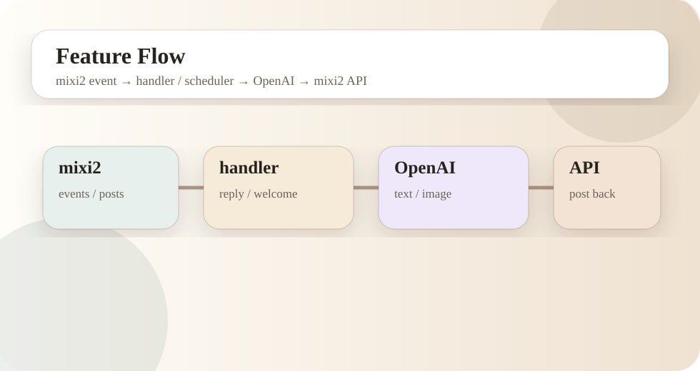

目次
- 全体思想
- 標準フォルダ構成
- Plugin repo内の構成
- 処理の流れ
- 人格と素材の分離
- 共通テンプレと本番repoの違い
全体思想
このPlugin群は、ひとつの巨大なBOTを作るのではなく、同じ設計の小さな専用Pluginを複数運用する方針で整理しています。キャラクターごとにGitHub repo、persona、assets、Railway serviceを分けることで、どのBOTにどの変更が入るのかを明確にします。
本番repoでは1人格・1assetsに寄せています。これにより、repoを開けばそのBOTのためのコードと素材だけが見える状態になります。設定ミスや素材の取り違えを物理的に起こしにくくする設計です。
標準フォルダ構成
C:\dev\mixi2-plugins
├─ base-bot
│ └─ 共通テンプレ。Railway本番には使わない。
├─ mixi2-community-voidcat-plugin
│ ├─ personas\kyomu_neko
│ └─ assets\kyomu_neko
├─ mixi2-community-fujita-plugin
│ ├─ personas\fujita
│ └─ assets\fujita
├─ mixi2-community-nan_ai-plugin
│ ├─ personas\nanchatte_ai
│ └─ assets\nanchatte_ai
└─ voidcat-plugin-notes
└─ docsPlugin repo内の構成
| 場所 | 役割 | 運用上の注意 |
|---|---|---|
cmd/plugin | Railway本番で起動するPlugin本体。 | 変更後は必ず go build ./cmd/plugin。 |
cmd/configui | ローカルブラウザ設定UI。 | Railway本番では起動しない。 |
cmd/configcheck | 現在の設定とパス存在を確認。 | PERSONA_PATHやIMAGE_REF_DIR確認。 |
cmd/gptcheck | OpenAI接続確認。 | APIキー、モデル名、BASE_URL確認。 |
cmd/mixi2check | mixi2認証とRequirement確認。 | Requirement変更後に必須。 |
cmd/timelinecheck | 投稿読み取り確認。 | 読み取りRequirement不足の発見に有効。 |
internal/config | .envやRailway Variables読み込み。 | 空文字、デフォルト値、FEATURES判定。 |
internal/handler | イベント、投稿、返信、歓迎、管理者コマンド。 | 誤返信や二重返信を避ける中心。 |
internal/scheduler | 定時投稿、画像投稿、静寂投稿。 | 時刻、履歴、Volume永続化が重要。 |
personas | 人格設定。 | 専用repoでは原則1人格だけ。 |
assets | 画像参照素材。 | 専用repoでは原則1人格分だけ。 |
処理の流れ

- mixi2からコミュニティ投稿やイベントを受け取る。
- configで現在のpersona、features、保存パスを読む。
- handlerがイベント種別と投稿内容を判定する。
- reply、welcome、theme、adminなどの入口へ分ける。
- OpenAIが必要な場合だけ生成を呼ぶ。
- mixi2 APIで投稿・返信する。
- 投稿済み、返信済み、定時投稿履歴、静寂投稿履歴を
/dataに保存する。
人格と素材の分離
人格は personas/{persona}/persona.json、画像素材は assets/{persona}/refs に分けます。人格ファイルには、名前、説明、トリガーワード、口調、返信方針、fallback文などを入れます。画像素材は、キャラクターの見た目、スタイル、返信時の参照画像などを置く想定です。
PERSONA="kyomu_neko"
PERSONA_PATH="personas/kyomu_neko/persona.json"
IMAGE_REF_DIR="assets/kyomu_neko/refs"共通テンプレと本番repoの違い
| 種類 | 役割 | GitHub | Railway | 中身 |
|---|---|---|---|---|
| base-bot | 共通テンプレ | 不要または任意 | 使わない | 複数人格やサンプルを持ってよい。 |
| 専用Plugin repo | 本番運用 | Private repo | 使う | 原則1人格・1assets。 |
| notes repo | 公開記事 | Publicでも可 | 使わない | docsのみ。秘密値なし。 |